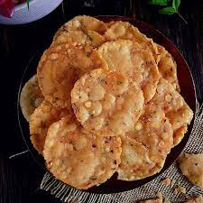

Sweets
Arisalu
Arisalu is a traditional sweet made with gram flour and jaggery. It is a popular sweet in Andhra Pradesh and is often served during festivals and special occasions.

Burelu is a sweet dumpling made with lentil flour and jaggery. It is a popular sweet in Andhra Pradesh and is often served during festivals and special occasions.

Gavalu is a sweet made with gram flour and sugar. It is a popular sweet in Andhra Pradesh and is often served during festivals and special occasions.

Popuchaka is a sweet made with rice flour and jaggery. It is a popular sweet in Andhra Pradesh and is often served during festivals and special occasions.

Panchadara Laddu is a sweet made with gram flour, jaggery, and ghee. It is a popular sweet in Andhra Pradesh and is often served during festivals and special occasions.

Rava Laddu is a sweet made with semolina, coconut, and jaggery. It is a popular sweet in Andhra Pradesh and is often served during festivals and special occasions.